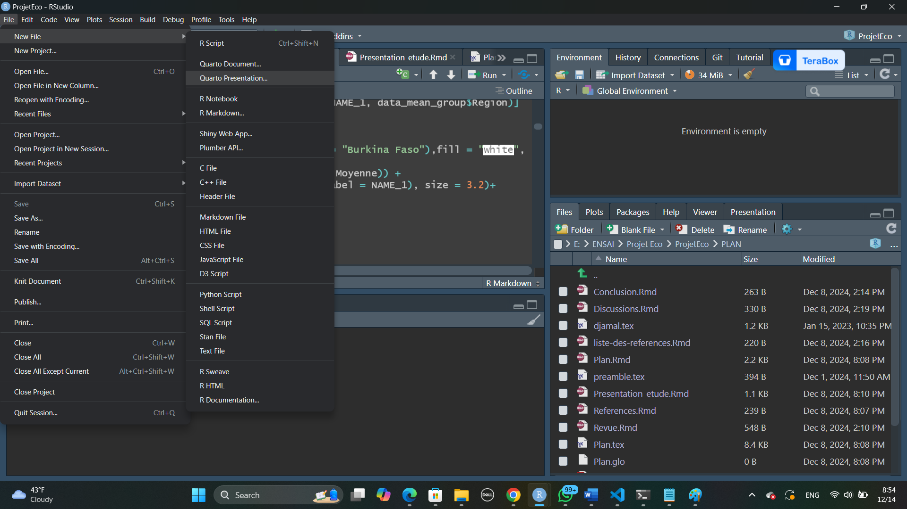
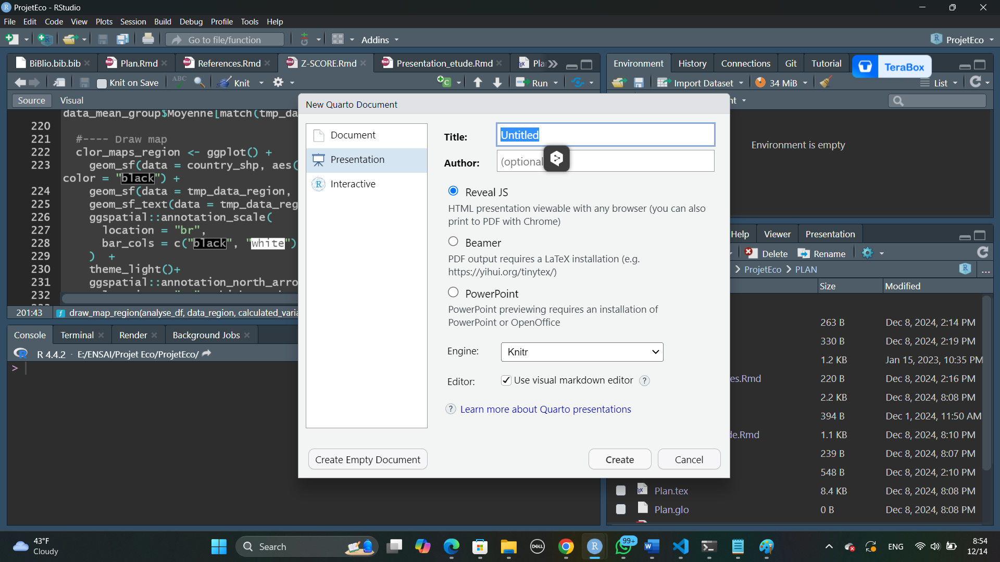
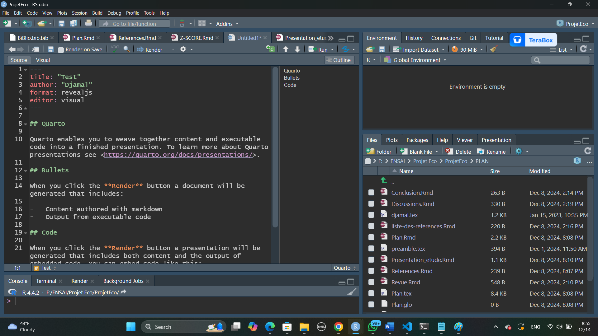
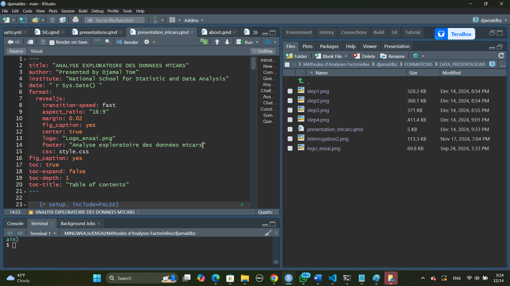
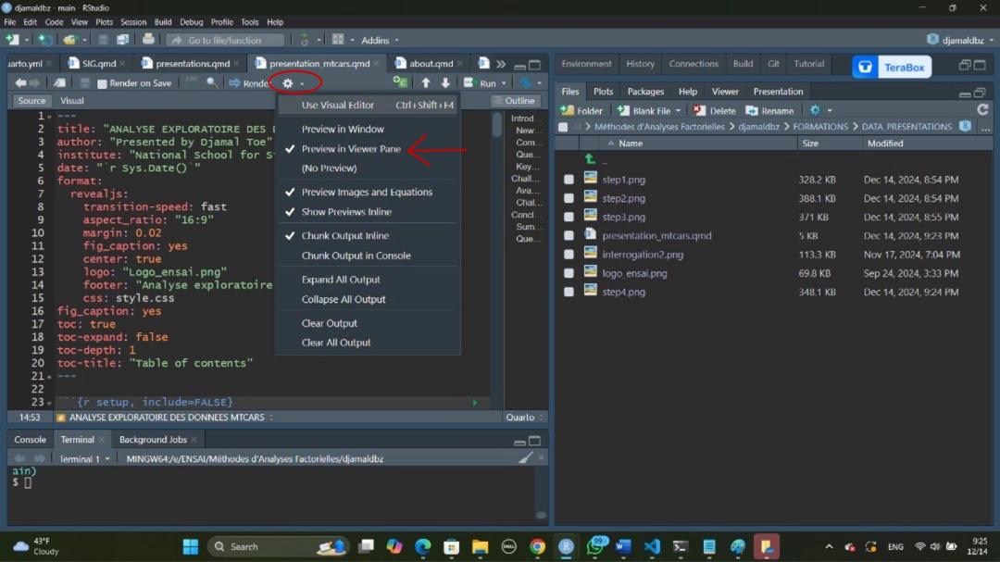
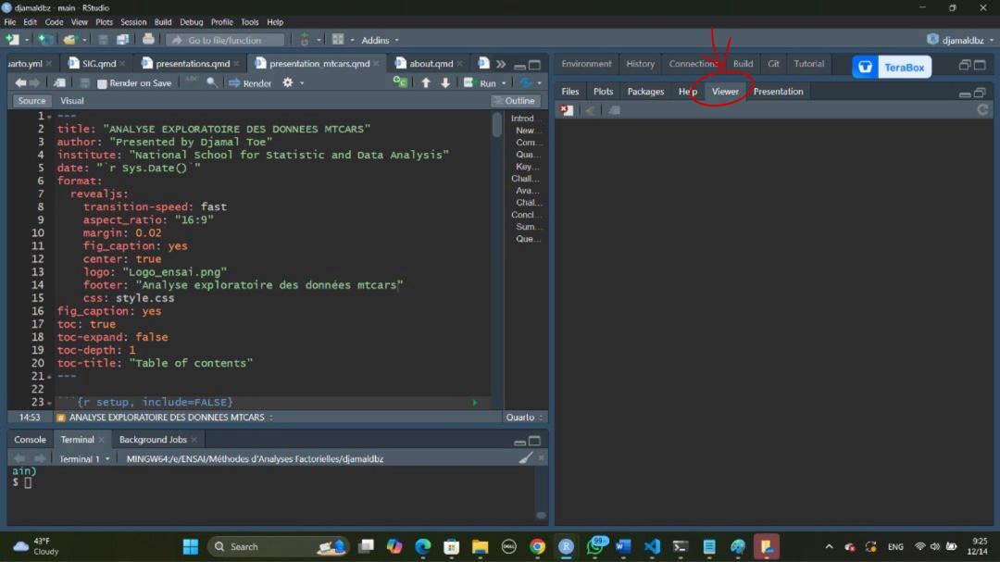
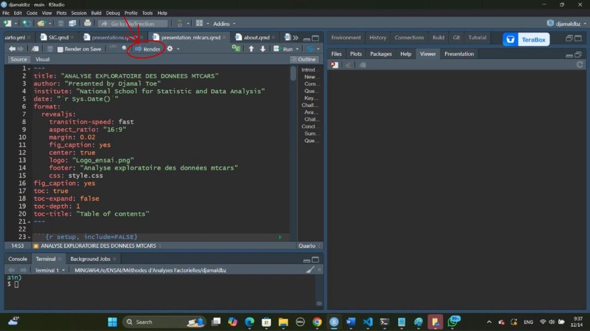

packages <- c("ggplot2","haven", "gtsummary", "corrr", "MASS",
"dplyr","haven", "rstatix", "tidyverse", "ggpubr",
"glue", "dplyr","ggspatial", "ggrepel",
"readxl", "stringr", "colorspace")
for (pkg in packages) {
if (!requireNamespace(pkg, quietly = TRUE)) {
install.packages(pkg, dependencies = T)
}
library(pkg, character.only = TRUE)
}
Djamal TOE
Data Scientist & Machine Learning Engineer
Navigate
Comment faire une présentation avec R et Quarto
Faire ses présentations directement avec R et Rstudio
Pourquoi utiliser R et Rstudio pour ses présentations ?
R et RStudio offrent des outils puissants pour créer des présentations dynamiques, reproductibles et intégrées à vos analyses de données. Voici quelques raisons :
- Intégration parfaite des analyses et des présentations :
Nous pouvons combiner code, graphiques, tableaux et explications textuelles dans un seul document. Cela garantit une reproductibilité totale : les résultats sont automatiquement mis à jour si vos données changent.
- Flexibilité avec RMarkdown :
Créez des présentations dans divers formats : HTML (slidy, reveal.js), PDF (Beamer), ou powerpoint ppt. Les formats sont hautement personnalisables pour répondre à vos besoins esthétiques et fonctionnels.
- Simplification du travail collaboratif :
Il y’a une possibilité de garder un fichier .tex pour ceux qui sont à l’aise avec latex.
Voir un exemple de présentation
Maintenant allons-y !!!
Commençons par une présentation revaljs
- Installer les packages nécessaires
Assurez-vous d’avoir le package revealjs installé. Si ce n’est pas le cas, installez-le avec :
install.packages("revealjs")
- Créer un fichier RMarkdown pour une présentation
Créer un nouveau fichier RMarkdown :
Allez dans : File > New File > Quarto presentation
Dans la fenêtre qui s’ouvre : Entrez un titre et un auteur. Dans l’option Default Output Format, choisissez From Template > Revealjs Presentation.
- Changer l’en-tête YAML
En image voici, un descriptif visuel des 04 petites étapes pour la création du fichier avec des images :




Explication de l’en-tête YAML
Informations générales
- title : Titre principal de la présentation
Ici : “ANALYSE EXPLORATOIRE DES DONNEES MTCARS”. C’est ce qui s’affiche en haut de la première diapositive.
- author : Nom(s) des présentateur(s)
Ici : “Presented by Djamal Toe”.
- institute : Institution ou organisation associée
Ici : “National School for Statistic and Data Analysis”.
-date : Date de la présentation
Ici, elle est générée dynamiquement avec : 2026-08-09. Cela affichera automatiquement la date du jour où le fichier est tricoté.
Format et personnalisation (reveal.js)
La section format: revealjs: contient des options spécifiques à la bibliothèque reveal.js, permettant de personnaliser la présentation.
Vitesse de transition:
transition-speed: fastdéfinit la vitesse des transitions entre les diapositives. Options possibles : slow, normal, fast.Aspect ratio :
aspect_ratio: "16:9"spécifie le ratio largeur/hauteur des diapositives. Le ratio “16:9” est idéal pour les écrans modernes (écran large). Autres options possibles : “4:3”, “3:2”, etc.Marges :
margin: 0.02définit l’espace vide autour du contenu de chaque diapositive. Une valeur faible (comme 0.02) maximise l’espace utilisé sur chaque diapositive.Centrage :
center: truepermet de Centrer le contenu verticalement et horizontalement sur chaque diapositive.Pied de page : footer: “English classes with Milonnet” : Ajoute un texte en bas de chaque diapositive, comme une signature ou une note de contexte.
Logo :
logo: "logo_ensai.png"affiche un logo en haut à droite de chaque diapositive. L’image doit être placée dans le répertoire spécifié ou un chemin relatif correct doit être utilisé.CSS personnalisé :
css: style.csspermet d’utiliser un fichier CSS externe pour personnaliser les styles. Exemple : changer les polices, couleurs, tailles, etc. Le fichier style.css doit être dans le même répertoire ou le chemin approprié doit être indiqué.Gestion des figure :
fig_caption: yesactive l’affichage des légendes sous les graphiques insérés.Table des matières (ToC) :
toc: trueactive l’affichage d’une table des matières,toc-expand: falseexige que les sections de la table des matières ne soient pas développées par défaut,toc-depth: 1définit la profondeur de la hiérarchie affichée dans la table des matières (seulement les titres principaux #).
Prévisualition
Pendant que vous faites la présentations sur Rstudio, vous pouvez la présualiser. Regardez les images ci-après :



ImportantViewer ou Presenation ?
A l’étape 2 de la prévisualisation, il se peut que la prévisualisation apparaisse dans la partie Presentation juste à droite de l’onglet Viewer encerclé en rouge sur l’image.
Mise en forme avec le fichier CSS
Pour cette section ne vous inquietez pas si vous n’avez pas de connaissance en html ou en css, nous utiliserons juste un code css pour la mise en forme du titre.
Télécharger le fichier de la présentation
Avant de télécharger le fichier, vous pouvez voir ce qu’il donne en cliquant sur ce lien
Vous pouvez télécharger le fichier d’analyse exploratoire des données mtcars au format .qmd ci-dessous.
Si vous avez des questions, vous pouvez me contacter !!!